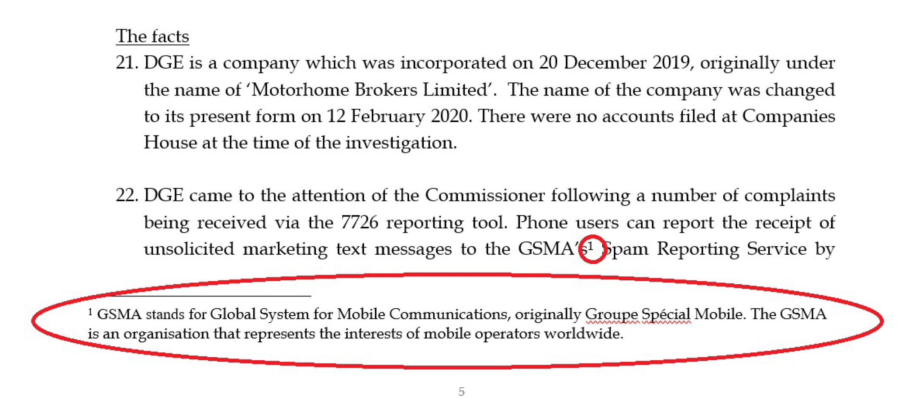
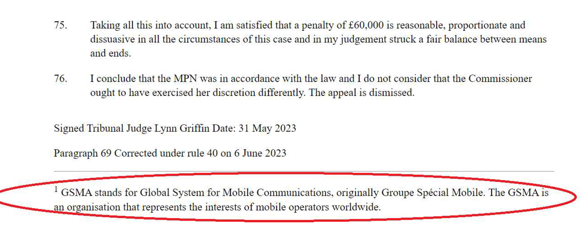
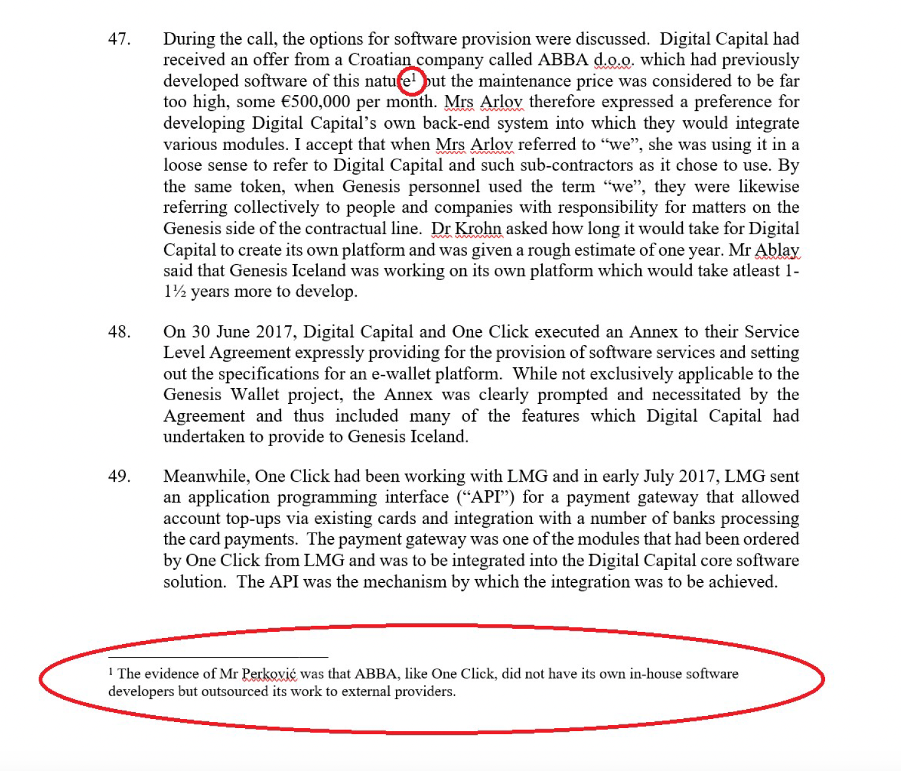
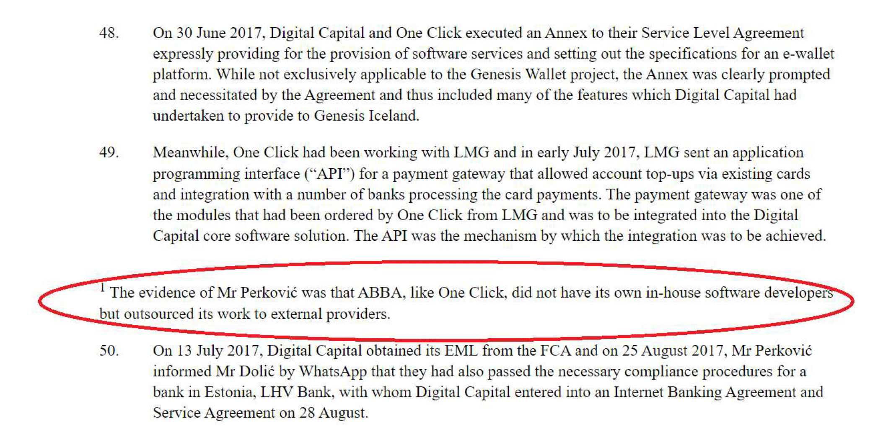

If your judgment/decision requires footnotes, we recommend using either the Footnote or Endnote function in Word. Whether you choose footnotes or endnotes, please use that system consistently throughout the document.
Please note, in the web version of the document, all footnotes will appear at the end of the judgment/decision. In the PDF version, they will appear as they do in the Word document.
Digital Growth Experts Ltd v Information Commissioner [2023] UKFTT 458 (GRC)
In this decision, a footnote has been used at paragraph at paragraph 22:

When the decision appears online, the parser can recognise that this is a footnote as it has been created using the Footnote function, and so can move it to the end of the decision:

Digital Capital Limited v Genesis Mining Iceland E.H.F. [2021] EWHC 2462 (Comm)
In this judgment, a footnote has been added at paragraph 47. However, it has been placed in manually rather than using the footnote function.

As the footnote has been placed manually, the parser cannot recognise it properly and so the footnote appears like normal text:
